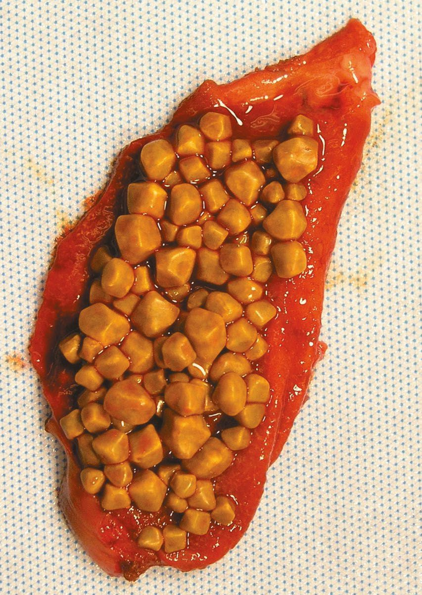
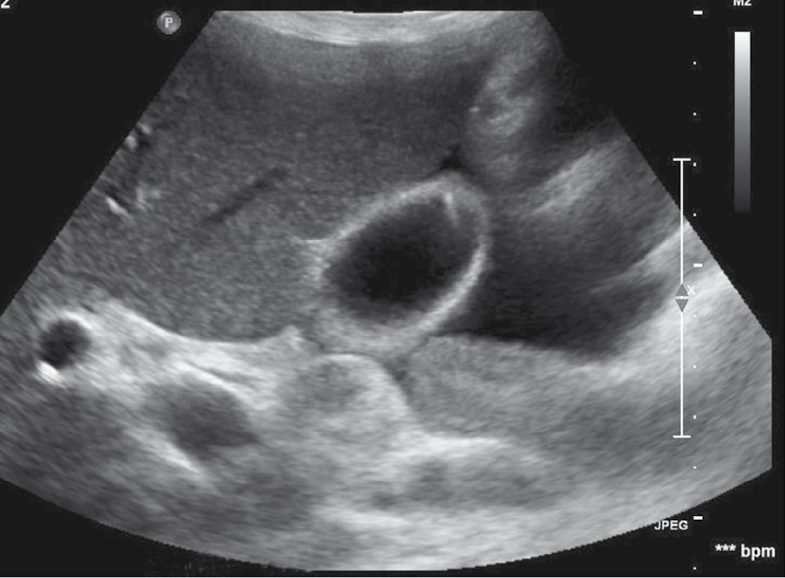
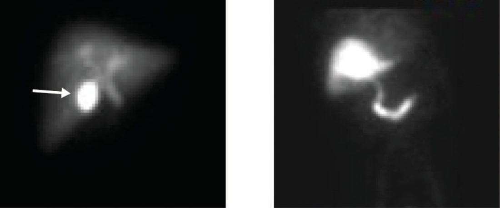
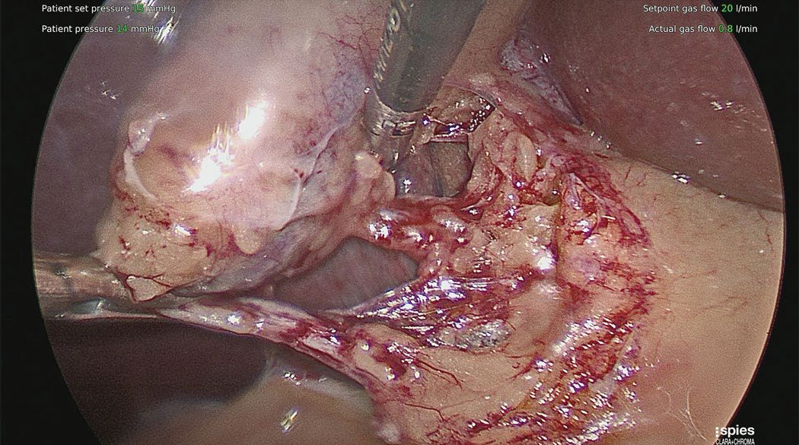

Gallstone Disease and Cholecystitis
Summary
- Gallstones affect 10–15% of the population in Western societies and are the most common biliary pathology [1].
- Most gallstones remain asymptomatic; only 1–2% of carriers develop symptoms requiring surgery each year [1].
- When a stone obstructs the cystic duct, the result ranges from self-limiting biliary colic to acute cholecystitis, an inflammatory (initially sterile, later often secondarily infected) process of the gallbladder wall [2].
- Cholecystectomy, most often laparoscopic, is the definitive treatment and is one of the most commonly performed general surgery operations [1][3].
Definition
- Cholelithiasis is the presence of stones (cholesterol, pigment, or mixed) within the gallbladder [1].
- Acute cholecystitis is inflammation of the gallbladder wall resulting from sustained obstruction of the cystic duct, most commonly by an impacted gallstone, with associated oedema, mucosal ischaemia and, in most instances, secondary bacterial contamination [2][3].
- Chronic cholecystitis is a continuum of the same process, produced by recurrent, self-limited attacks of cystic duct obstruction that lead to gallbladder wall fibrosis [3].
Pathophysiology
- Gallstones are classified into cholesterol, pigment (black or brown) and mixed types [1][4].
- Cholesterol stone formation requires (1) supersaturation of bile with cholesterol, (2) concentration of bile within the gallbladder, (3) nucleation of cholesterol monohydrate crystals, and (4) gallbladder dysmotility that allows crystals time to aggregate [3].
- Cholesterol is secreted from the hepatocyte canalicular membrane in phospholipid vesicles; when bile is supersaturated with cholesterol or bile-acid concentrations are low, unstable vesicles form from which cholesterol crystals nucleate [1].
- Black pigment stones form in a sterile gallbladder from calcium bilirubinate and are associated with haemolytic states (hereditary spherocytosis, sickle cell disease) and cirrhosis; brown pigment stones form in the bile ducts and are linked to bacterial infection and bile stasis [1][3][4].
- Acute calculous cholecystitis results from a gallstone impacting the cystic duct or gallbladder neck; continued obstruction causes distension, inflammation, oedema and subserosal haemorrhage of the gallbladder wall [3].
- The inflammatory process is initially mediated by the mucosal toxin lysolecithin, bile salts and platelet-activating factor, amplified by increased prostaglandin synthesis; secondary bacterial contamination is documented in 15–30% of patients undergoing cholecystectomy for acute uncomplicated cholecystitis [2].
- If obstruction persists, the process can progress to ischaemia, necrosis and gangrenous or emphysematous cholecystitis [3].
- Complete cystic duct obstruction without infection may instead cause reabsorption of bile salts and secretion of sterile mucus, producing a mucocele of the gallbladder [1].

Clinical features
- Symptomatic gallstones classically present with biliary colic: dull, continuous epigastric or right-upper-quadrant pain, often after a fatty meal (from cholecystokinin-mediated gallbladder contraction against an obstructed cystic duct), lasting minutes to hours and frequently starting at night, with associated nausea and vomiting [1][3].
- Only about 50% of patients report a clear association with food [3].
- Pain lasting more than 4–6 hours, or accompanied by fever, suggests progression to acute cholecystitis [3][4].
- On examination, acute cholecystitis produces right-upper-quadrant tenderness with inspiratory arrest on palpation of the subcostal region (Murphy's sign) although this is non-specific [1][2].
- A palpable mass may reflect omentum walling off the inflamed gallbladder [1].
- Jaundice suggests a gallstone migrating to obstruct or compress the common bile duct (choledocholithiasis) or, rarely, extrinsic compression of the common hepatic duct by a stone impacted in the gallbladder neck (Mirizzi syndrome) [1].
- A palpable, non-tender gallbladder in a jaundiced patient (Courvoisier's sign) is unlikely to be due to gallstones, because chronic inflammation renders the gallbladder thick-walled and non-distensible, and instead suggests distal malignant obstruction [1][5].
Etiology
- Recognised risk factors include female sex, increasing age (particularly >40 years), obesity, pregnancy, rapid weight loss (including after bariatric surgery), a high-calorie/high-cholesterol diet, family history, diabetes mellitus, ileal disease or resection (depleting the bile-acid pool), total parenteral nutrition, prolonged fasting, and drugs such as oral contraceptives, octreotide and thiazides [1][3][4].
- Chronic haemolytic conditions predispose to pigment stones [1].
- Acalculous cholecystitis occurs in the absence of stones, typically in critically ill patients, and those recovering from major surgery, trauma or burns, with biliary stasis and ischaemia implicated; diagnosis is often delayed and mortality is high [1][3].
Diagnosis
- Ultrasonography (USG) is the first-line and most sensitive/specific imaging modality, identifying stones and features of acute cholecystitis such as gallbladder wall thickening (>3 mm), pericholecystic fluid and a sonographic Murphy's sign; sensitivity is approximately 85% and specificity 95% [1][3][4].
- The Tokyo Guidelines 2018 diagnostic criteria for acute cholecystitis require at least one local sign of inflammation (Murphy's sign, right-upper-quadrant pain/tenderness/mass), at least one systemic sign (fever, elevated CRP, elevated WBC), and, for a definite diagnosis, supportive imaging [1].
- Mild elevations of ALP, bilirubin, transaminases and leukocytosis support the diagnosis; profound jaundice is uncommon in isolated cholecystitis and should raise suspicion of cholangitis or Mirizzi syndrome [3].
- Hepatobiliary iminodiacetic acid (HIDA) scanning shows non-visualisation of the gallbladder with prompt filling of the common bile duct and duodenum in acute cholecystitis, with sensitivity and specificity of about 95% each; normal filling occurs within 60 minutes in fasting subjects (liver uptake within 10 minutes) [2].
- CT is reserved for atypical presentations, diagnostic uncertainty, or suspected complications such as perforation [1][3].
- If jaundice with deranged liver function tests is present, MRCP is used to exclude choledocholithiasis [1].


Scoring and Severity
- The Tokyo Guidelines 2018 grade acute cholecystitis into three severity tiers.
- Grade III (severe) is associated with dysfunction of any organ system (cardiovascular, neurological, respiratory, renal, hepatic or haematological).
- Grade II (moderate) is associated with any one of: WBC >18,000/mm³, a palpable tender right-upper-quadrant mass, symptom duration >72 hours, or marked local inflammation (gangrenous cholecystitis, pericholecystic or hepatic abscess, biliary peritonitis, emphysematous cholecystitis).
- Grade I (mild) meets neither of these, occurring in a healthy patient with mild inflammatory changes, making cholecystectomy a low-risk procedure [1].
- The American Association for the Surgery of Trauma (AAST) Emergency General Surgery grading system similarly stratifies cholecystitis into five grades, from localised inflammation (Grade I) to pericholecystic abscess, bilioenteric fistula and peritonitis (Grade V) [3].
- These grading systems, combined with patient comorbidity (e.g.
- Charlson Comorbidity Index, ASA class) and institutional capability, guide the Tokyo Guidelines management algorithm [1].
Treatment and Management
Asymptomatic gallstones generally require no intervention; prophylactic cholecystectomy is reserved for specific higher-risk situations: large (>3 cm) stones, concomitant choledocholithiasis, chronic haemolytic disease, gallbladder polyps >1 cm, porcelain gallbladder, high-risk ethnic/geographic populations for gallbladder cancer, transplant recipients, and bariatric surgery patients [1]. Over a 10-year period roughly two-thirds of patients with asymptomatic stones remain symptom-free [2].
- For symptomatic gallstones, cholecystectomy is the treatment of choice [1].
- Initial non-operative management of acute cholecystitis includes nil-by-mouth status, intravenous fluids, analgesia, and broad-spectrum antibiotics effective against Gram-negative aerobes (e.g. cefazolin, cefuroxime or ciprofloxacin), since the concentration of antibiotic in serum matters more than biliary concentration once the cystic duct is obstructed [1].
- Common causative organisms include E. coli, Klebsiella, Enterobacter and Bacteroides species [3].
- Early laparoscopic cholecystectomy, performed by an experienced surgeon within 5–7 days of symptom onset, is safe and shortens hospital stay compared with delayed (interval) surgery at 6 weeks, although conversion rates are higher than in elective surgery [1][3].
- Approximately 20% of patients managed non-operatively while awaiting interval surgery fail to respond and require urgent intervention [3].
- In critically ill or high-risk patients with severe (Grade III) cholecystitis, percutaneous cholecystostomy tube drainage under ultrasound or CT guidance, combined with antibiotics, is used to temporise, with interval cholecystectomy 6–12 weeks later once the patient has recovered [2][3].
- More than 90% of patients with acalculous cholecystitis improve with cholecystostomy alone [3].
- Symptomatic gallstones in pregnancy that cannot be managed expectantly are treated with laparoscopic cholecystectomy, ideally in the second trimester [1][2].
Surgeries
- Laparoscopic cholecystectomy is the gold-standard operation, performed via four ports (a 12-mm umbilical port for specimen extraction and three smaller ports for dissection), with the patient in reverse Trendelenburg [3].
- The gallbladder infundibulum is retracted inferolaterally to open the triangle of Calot, and dissection proceeds until the critical view of safety is achieved: the lower third of the gallbladder is dissected free of the liver bed, and only two structures (the cystic duct and cystic artery) are seen entering the gallbladder, before either is clipped or divided [3][6].
- The Calot lymph node typically overlies the cystic artery and serves as a useful landmark [1][3].
- Intraoperative cholangiography or laparoscopic ultrasound may be used selectively to define anatomy or identify choledocholithiasis, particularly in cases of gallstone pancreatitis or anomalous anatomy, though routine use is not universally recommended [3][6].
When dissection is unsafe due to severe inflammation, bailout options include gallbladder decompression by needle aspiration, a dome-down (retrograde) dissection, subtotal cholecystectomy (fenestrating, leaving the cystic duct stump open, or reconstituting, closing the stump) leaving the infundibulum in situ with a drain, or early conversion to open cholecystectomy via a midline or right subcostal incision [3]. Open common bile duct exploration, choledochoduodenostomy, and Roux-en-Y hepaticojejunostomy are reserved for concomitant choledocholithiasis not clearable by other means [3].

Complications
- Effects and complications of gallstones include biliary colic, acute and chronic cholecystitis, empyema and mucocele of the gallbladder, gallbladder perforation, biliary obstruction with jaundice, acute cholangitis, gallstone pancreatitis, and gallstone ileus (intestinal obstruction from a stone eroding through a cholecystoduodenal fistula) [1].
- Bile duct injury complicates cholecystectomy in a small but important proportion of cases; more than 80% of bile duct injuries occur during cholecystectomy, most commonly from misidentification of anatomy rather than lack of technical skill, and are classified by the Strasberg system (modifying the Bismuth classification) according to location and extent [3].
- Postcholecystectomy syndrome (recurrence of upper abdominal pain and dyspepsia, with or without jaundice) occurs in 10–15% of patients and may reflect retained stones, bile leak, a long cystic duct remnant, or sphincter of Oddi dysfunction [3].
- Laparoscopic cholecystectomy carries approximately 0.1–0.5% mortality and 2–3% morbidity, with reported risks of bleeding (~1%), conversion to open surgery, bile leak (~1%) and bile duct injury (0.3–0.7%) [3][4].
Prognosis
- The natural history of asymptomatic gallstones is favourable: longitudinal follow-up shows that over 20 years only about 18% of patients develop biliary pain, with the annual probability of symptoms declining from 2% in the first 5 years to 0.5% by the third 5-year period [1].
- Once symptomatic, patients tend to have recurring episodes, and complicated gallstone disease develops in 3–5% of symptomatic patients per year [2].
- Cholecystectomy is curative in more than 90% of patients with symptomatic cholelithiasis, leaving them symptom-free [3].
References
- Bailey & Love's Short Practice of Surgery, 28th ed., Ch. 71
- Schwartz's Principles of Surgery: ABSITE and Board Review, Ch. 32
- Sabiston Textbook of Surgery, 22nd ed., Ch. 88
- Oxford Handbook of Clinical Surgery, 5th ed., Ch. 9
- Browse's Introduction to the Symptoms and Signs of Surgical Disease, 6th ed., Ch. 15
- Maingot's Abdominal Operations, 13th ed., Ch. 62